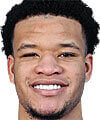

Estatura: 2,06
Peso: 107kg
Edad: 24 años
Años en la NBA: 4 años
Procedente de: Wake Forest
Estatura: 2,08
Peso: 106kg
Edad: 33 años
Años en la NBA: 12 años
Procedente de: Italia

Estatura: 2,01
Peso: 98kg
Edad: 22 años
Años en la NBA: 3 años
Procedente de: Kentucky
Estatura: 2,06
Peso: 100kg
Edad: 20 años
Años en la NBA: Novato
Procedente de: Duke